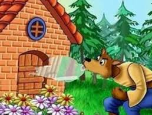

Érase una vez...
Érase una vez tres chanchitos que vivían con su madre. Un día, la madre decidió que ya era hora de que se fueran a vivir por su cuenta, así que los tres chanchitos se despidieron y se fueron a construir sus propias casas.
El primer chanchito
El primer chanchito decidió construir una casa de paja. No le llevó mucho tiempo y pronto terminó. Sin embargo, un día llegó el lobo y le dijo:
"¡Chanchito, chanchito, déjame entrar!"
El chanchito respondió:
"¡No, no, no! ¡Ni por todo el oro del mundo!"
Entonces el lobo dijo:
"Entonces soplaré y soplaré y tu casa derribaré."
Y así lo hizo. Sopló y sopló hasta que la casa de paja se derrumbó, y el chanchito tuvo que huir a la casa de su hermano.
El segundo chanchito
El segundo chanchito construyó su casa de madera. Era un poco más resistente que la casa de paja, pero cuando el lobo llegó, también sopló y sopló hasta que la casa se derrumbó. Los dos chanchitos tuvieron que huir a la casa de su hermano mayor.

El tercer chanchito
El tercer chanchito, que era el más sensato de los tres, decidió construir su casa de ladrillo. El lobo llegó y sopló y sopló, pero no pudo derribar la casa.
Entonces, el lobo decidió entrar por la chimenea, pero el chanchito había puesto una olla con agua hirviendo en el fuego. El lobo cayó en la olla y salió corriendo de la casa.
Los tres chanchitos vivieron felices para siempre, y el lobo nunca volvió a molestarlos.